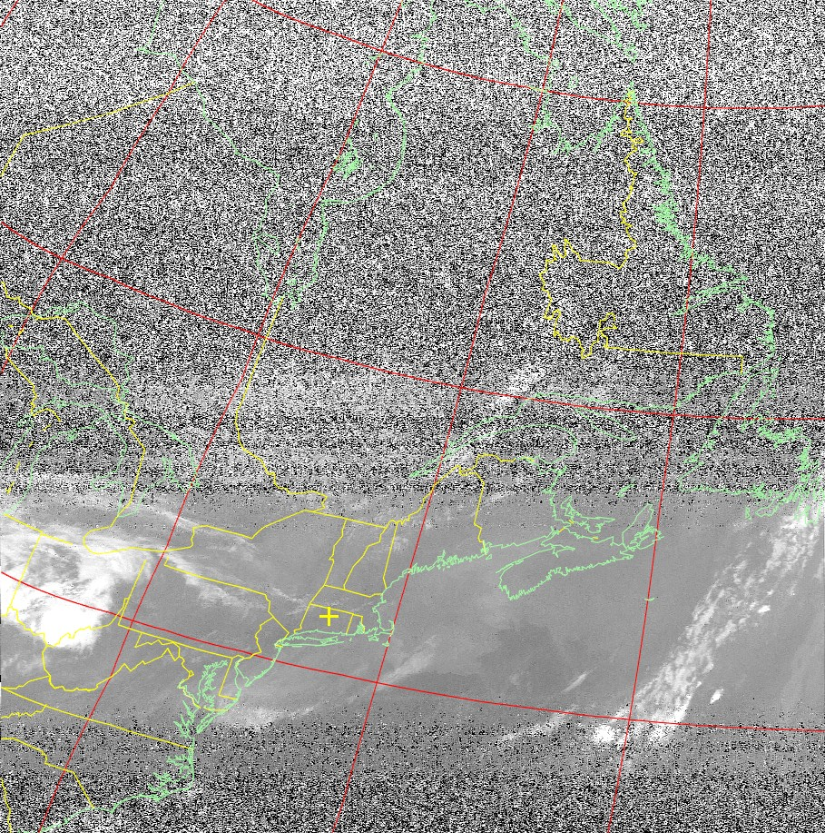

Overview
This project entails pulling satellite imagery directly off of orbiting NOAA weather satellites. The custom-made 137 MHz double cross antenna is connected to an SDR where NOAA weather broadcasts can be received. The data from the SDR is read in through CubicSDR and then pipelined with Soundflower to WXtoImg where it is rendered.
Build Process
The main operating principle behind this project is that NOAA transmissions are not encrypted. Weather stations can receive thier signals just as anyone can. As long as the antenna matches the signal characteristics of the broadcasting satellites, the imagery can be rendered. After some quick internet searching, it was determined that the satellites broadcast at 137 MHz with linear polarization. In the name of trying the simplest solution first, I constructed a half wavelength diploe antenna for this frequency.
Diploe antenna. And no, nighttime wasn't going to stop me from testing it.
I also configured all of the software prior to this test, but more on that later. The conclusion from this test was that the dipole was hot garbage.
Diploe render. The dark row in the middle of the image is the only data that was actually received -- and not very well at that.
Given the signal characteristics, I then built a (massive) 137 MHz double cross antenna. The construction of this is pretty standard...half wavelength dipoles mounted 30º from the vertical with one quarter wavelength phasing wires on two opposing sides of the antenna. The physical construction was made out of PVC pipes with a wooden base.
The completed double cross antenna
The software for this project was relatively straightforward. I first configured CubicSDR to interface with the RTL-SDR that connected to the antenna via SMA. I confirmed this by tuning into some local radio stations with my antenna. Once this was confirmed to be working, I pipelined the output to WXtoImg. All that was left was to configure CubicSDR to listen for 137MHz at the right time. This coordination was enabled by a feature of WXtoImg which using location data to determine when satellies are overhead. The result of this setup was a success!

WXtoIMG on the left rendering the image, CubicSDR on the right showing the signal waterfall
Fully receiving an image takes about ten minutes. Over this time, the antenna will pass overhead and will eventually fall back under the horizon where the signal is then lost. The omnidirectional charactertics of the double cross antenna provide a satisfactory gain throughout the path of the satellite.
A full rendering clearly showcasing when the horizon comes into play
It is worth noting that the four NOAA satellites only broadcast black and white imagery. All color added to these images is false color.

Running all of the software is very intensive both for my laptop and for the SDR. The angle aluminum here serves as heatsinks.
Over the following few weeks, I ran the system many more times. Below is a gallery of some of these renders!

In the future I'd like to try and pull from some of the GOES satellites all the way up in geosynchronous orbit with some sort of Yagi. I also want to look into an antenna tracker for the NOAA satellites. We'll see...